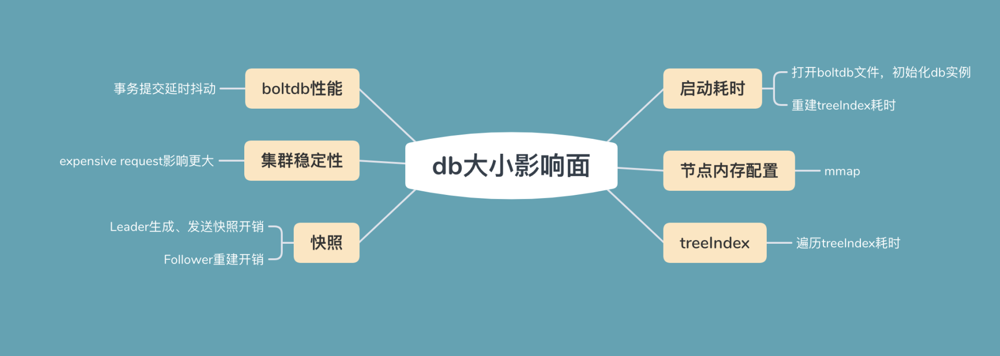
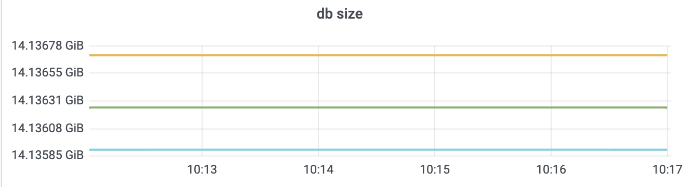
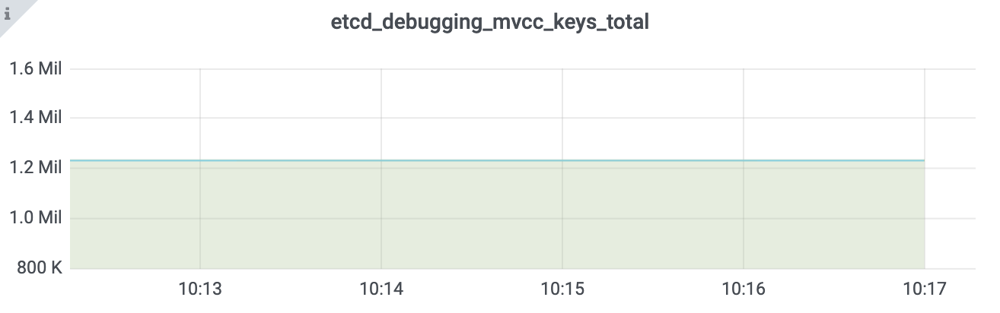
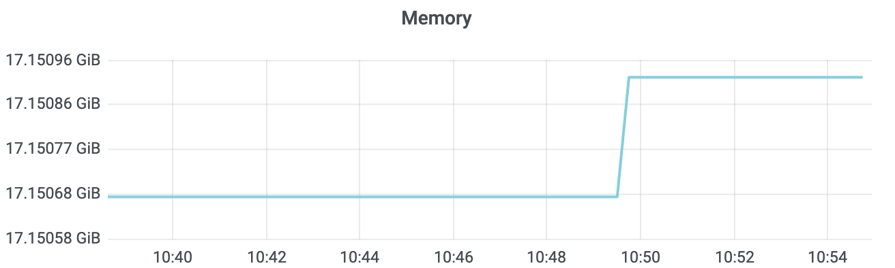
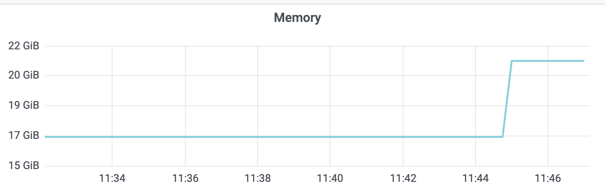

- 00 开篇词 为什么你要学习etcd_.md.html
- 01 etcd的前世今生：为什么Kubernetes使用etcd？.md.html
- 02 基础架构：etcd一个读请求是如何执行的？.md.html
- 03 基础架构：etcd一个写请求是如何执行的？.md.html
- 04 Raft协议：etcd如何实现高可用、数据强一致的？.md.html
- 05 鉴权：如何保护你的数据安全？.md.html
- 06 租约：如何检测你的客户端存活？.md.html
- 07 MVCC：如何实现多版本并发控制？.md.html
- 08 Watch：如何高效获取数据变化通知？.md.html
- 09 事务：如何安全地实现多key操作？.md.html
- 10 boltdb：如何持久化存储你的key-value数据？.md.html
- 11 压缩：如何回收旧版本数据？.md.html
- 12 一致性：为什么基于Raft实现的etcd还会出现数据不一致？.md.html
- 13 db大小：为什么etcd社区建议db大小不超过8G？.md.html
- 14 延时：为什么你的etcd请求会出现超时？.md.html
- 15 内存：为什么你的etcd内存占用那么高？.md.html
- 16 性能及稳定性（上）：如何优化及扩展etcd性能？.md.html
- 17 性能及稳定性（下）：如何优化及扩展etcd性能_.md.html
- 18 实战：如何基于Raft从0到1构建一个支持多存储引擎分布式KV服务？.md.html
- 19 Kubernetes基础应用：创建一个Pod背后etcd发生了什么？.md.html
- 20 Kubernetes高级应用：如何优化业务场景使etcd能支撑上万节点集群？.md.html
- 21 分布式锁：为什么基于etcd实现分布式锁比Redis锁更安全？.md.html
- 22 配置及服务发现：解析etcd在API Gateway开源项目中应用.md.html
- 23 选型：etcd_ZooKeeper_Consul等我们该如何选择？.md.html
- 24 运维：如何构建高可靠的etcd集群运维体系？.md.html
- 特别放送 成员变更：为什么集群看起来正常，移除节点却会失败呢？.md.html
- 结束语 搞懂etcd，掌握通往分布式存储系统之门的钥匙.md.html
- 捐赠
13 db大小：为什么etcd社区建议db大小不超过8G？
你好，我是唐聪。
在03写流程中我和你分享了etcd Quota模块，那么etcd为什么需要对db增加Quota限制，以及不建议你的etcd集群db大小超过8G呢？ 过大的db文件对集群性能和稳定性有哪些影响？
今天我要和你分享的主题就是关于db大小。我将通过一个大数据量的etcd集群为案例，为你剖析etcd db大小配额限制背后的设计思考和过大的db潜在隐患。
希望通过这节课，帮助你理解大数据量对集群的各个模块的影响，配置合理的db Quota值。同时，帮助你在实际业务场景中，遵循最佳实践，尽量减少value大小和大key-value更新频率，避免db文件大小不断增长。
分析整体思路
为了帮助你直观地理解大数据量对集群稳定性的影响，我首先将为你写入大量数据，构造一个db大小为14G的大集群。然后通过此集群为你分析db大小的各个影响面，db大小影响面如下图所示。

首先是启动耗时。etcd启动的时候，需打开boltdb db文件，读取db文件所有key-value数据，用于重建内存treeIndex模块。因此在大量key导致db文件过大的场景中，这会导致etcd启动较慢。
其次是节点内存配置。etcd在启动的时候会通过mmap将db文件映射内存中，若节点可用内存不足，小于db文件大小时，可能会出现缺页文件中断，导致服务稳定性、性能下降。
接着是treeIndex索引性能。因etcd不支持数据分片，内存中的treeIndex若保存了几十万到上千万的key，这会增加查询、修改操作的整体延时。
然后是boltdb性能。大db文件场景会导致事务提交耗时增长、抖动。
再次是集群稳定性。大db文件场景下，无论你是百万级别小key还是上千个大value场景，一旦出现expensive request后，很容易导致etcd OOM、节点带宽满而丢包。
最后是快照。当Follower节点落后Leader较多数据的时候，会触发Leader生成快照重建发送给Follower节点，Follower基于它进行还原重建操作。较大的db文件会导致Leader发送快照需要消耗较多的CPU、网络带宽资源，同时Follower节点重建还原慢。
构造大集群
简单介绍完db大小的六个影响面后，我们下面来构造一个大数据量的集群，用于后续各个影响面的分析。
首先，我通过一系列如下benchmark命令，向一个8核32G的3节点的集群写入120万左右key。key大小为32，value大小为256到10K，用以分析大db集群案例中的各个影响面。
./benchmark put --key-size 32 --val-size 10240 --total
1000000 --key-space-size 2000000 --clients 50 --conns 50
执行完一系列benchmark命令后，db size达到14G，总key数达到120万，其监控如下图所示：


启动耗时
在如上的集群中，我通过benchmark工具将etcd集群db大小压测到14G后，在重新启动etcd进程的时候，如下日志所示，你会发现启动比较慢，为什么大db文件会影响etcd启动耗时呢？
2021-02-15 02:25:55.273712 I | etcdmain: etcd Version: 3.4.9
2021-02-15 02:26:58.806882 I | etcdserver: recovered store from snapshot at index 2100090
2021-02-15 02:26:58.808810 I | mvcc: restore compact to 1000002
2021-02-15 02:27:19.120141 W | etcdserver: backend quota 26442450944 exceeds maximum recommended quota 8589934592
2021-02-15 02:27:19.297363 I | embed: ready to serve client requests
通过对etcd启动流程增加耗时统计，我们可以发现核心瓶颈主要在于打开db文件和重建内存treeIndex模块。
这里我重点先和你介绍下etcd启动后，重建内存treeIndex的原理。
我们知道treeIndex模块维护了用户key与boltdb key的映射关系，boltdb的key、value又包含了构建treeIndex的所需的数据。因此etcd启动的时候，会启动不同角色的goroutine并发完成treeIndex构建。
首先是主goroutine。它的职责是遍历boltdb，获取所有key-value数据，并将其反序列化成etcd的mvccpb.KeyValue结构。核心原理是基于etcd存储在boltdb中的key数据有序性，按版本号从1开始批量遍历，每次查询10000条key-value记录，直到查询数据为空。
其次是构建treeIndex索引的goroutine。它从主goroutine获取mvccpb.KeyValue数据，基于key、版本号、是否带删除标识等信息，构建keyIndex对象，插入到treeIndex模块的B-tree中。
因可能存在多个goroutine并发操作treeIndex，treeIndex的Insert函数会加全局锁，如下所示。etcd启动时只有一个构建treeIndex索引的goroutine，因此key多时，会比较慢。之前我尝试优化成多goroutine并发构建，但是效果不佳，大量耗时会消耗在此锁上。
func (ti *treeIndex) Insert(ki *keyIndex) {
ti.Lock()
defer ti.Unlock()
ti.tree.ReplaceOrInsert(ki)
}
节点内存配置
etcd进程重启完成后，在没任何读写QPS情况下，如下所示，你会发现etcd所消耗的内存比db大小还大一点。这又是为什么呢？如果etcd db文件大小超过节点内存规格，会导致什么问题吗？

在10介绍boltdb存储原理的时候，我和你分享过boltdb文件的磁盘布局结构和其对外提供的API原理。
etcd在启动的时候，会通过boltdb的Open API获取数据库对象，而Open API它会通过mmap机制将db文件映射到内存中。
由于etcd调用boltdb Open API的时候，设置了mmap的MAP_POPULATE flag，它会告诉Linux内核预读文件，将db文件内容全部从磁盘加载到物理内存中。
因此在你节点内存充足的情况下，启动后你看到的etcd占用内存，一般是db文件大小与内存treeIndex之和。
在节点内存充足的情况下，启动后，client后续发起对etcd的读操作，可直接通过内存获取boltdb的key-value数据，不会产生任何磁盘IO，具备良好的读性能、稳定性。
而当你的db文件大小超过节点内存配置时，若你查询的key所相关的branch page、leaf page不在内存中，那就会触发主缺页中断，导致读延时抖动、QPS下降。
因此为了保证etcd集群性能的稳定性，我建议你的etcd节点内存规格要大于你的etcd db文件大小。
treeIndex
当我们往集群中写入了一百多万key时，此时你再读取一个key范围操作的延时会出现一定程度上升，这是为什么呢？我们该如何分析耗时是在哪一步导致的？
在etcd 3.4中提供了trace特性，它可帮助我们定位、分析请求耗时过长问题。不过你需要特别注意的是，此特性在etcd 3.4中，因为依赖zap logger，默认为关闭。你可以通过设置etcd启动参数中的–logger=zap来开启。
开启之后，我们可以在etcd日志中找到类似如下的耗时记录。
{
"msg":"trace[331581563] range"，
"detail":"{range_begin:/vip/a; range_end:/vip/b; response_count:19304; response_revision:1005564; }"，
"duration":"146.432768ms"，
"steps":[
"trace[331581563] 'range keys from in-memory treeIndex' (duration: 95.925033ms)"，
"trace[331581563] 'range keys from bolt db' (duration: 47.932118ms)"
]
此日志记录了查询请求”etcdctl get –prefix /vip/a”。它在treeIndex中查询相关key耗时95ms，从boltdb遍历key时47ms。主要原因还是此查询涉及的key数较多，高达一万九。
也就是说若treeIndex中存储了百万级的key时，它可能也会产生几十毫秒到数百毫秒的延时，对于期望业务延时稳定在较小阈值内的业务，就无法满足其诉求。
boltdb性能
当db文件大小持续增长到16G乃至更大后，从etcd事务提交监控metrics你可能会观察到，boltdb在提交事务时偶尔出现了较高延时，那么延时是怎么产生的呢？
在10介绍boltdb的原理时，我和你分享了db文件的磁盘布局，它是由meta page、branch page、leaf page、free list、free页组成的。同时我给你介绍了boltdb事务提交的四个核心流程，分别是B+ tree的重平衡、分裂，持久化dirty page，持久化freelist以及持久化meta data。
事务提交延时抖动的原因主要是在B+ tree树的重平衡和分裂过程中，它需要从freelist中申请若干连续的page存储数据，或释放空闲的page到freelist。
freelist后端实现在boltdb中是array。当申请一个连续的n个page存储数据时，它会遍历boltdb中所有的空闲页，直到找到连续的n个page。因此它的时间复杂度是O(N)。若db文件较大，又存在大量的碎片空闲页，很可能导致超时。
同时事务提交过程中，也可能会释放若干个page给freelist，因此需要合并到freelist的数组中，此操作时间复杂度是O(NLog N)。
假设我们db大小16G，page size 4KB，则有400万个page。经过各种修改、压缩后，若存在一半零散分布的碎片空闲页，在最坏的场景下，etcd每次事务提交需要遍历200万个page才能找到连续的n个page，同时还需要持久化freelist到磁盘。
为了优化boltdb事务提交的性能，etcd社区在bbolt项目中，实现了基于hashmap来管理freelist。通过引入了如下的三个map数据结构（freemaps的key是连续的页数，value是以空闲页的起始页pgid集合，forwardmap和backmap用于释放的时候快速合并页），将申请和释放时间复杂度降低到了O(1)。
freelist后端实现可以通过bbolt的FreeListType参数来控制，支持array和hashmap。在etcd 3.4版本中目前还是array，未来的3.5版本将默认是hashmap。
freemaps map[uint64]pidSet // key is the size of continuous pages(span)，value is a set which contains the starting pgids of same size
forwardMap map[pgid]uint64 // key is start pgid，value is its span size
backwardMap map[pgid]uint64 // key is end pgid，value is its span size
另外在db中若存在大量空闲页，持久化freelist需要消耗较多的db大小，并会导致额外的事务提交延时。
若未持久化freelist，bbolt支持通过重启时扫描全部page来构造freelist，降低了db大小和提升写事务提交的性能（但是它会带来etcd启动延时的上升）。此行为可以通过bbolt的NoFreelistSync参数来控制，默认是true启用此特性。
集群稳定性
db文件增大后，另外一个非常大的隐患是用户client发起的expensive request，容易导致集群出现各种稳定性问题。
本质原因是etcd不支持数据分片，各个节点保存了所有key-value数据，同时它们又存储在boltdb的一个bucket里面。当你的集群含有百万级以上key的时候，任意一种expensive read请求都可能导致etcd出现OOM、丢包等情况发生。
那么有哪些expensive read请求会导致etcd不稳定性呢？
首先是简单的count only查询。如下图所示，当你想通过API统计一个集群有多少key时，如果你的key较多，则有可能导致内存突增和较大的延时。

在etcd 3.5版本之前，统计key数会遍历treeIndex，把key追加到数组中。然而当数据规模较大时，追加key到数组中的操作会消耗大量内存，同时数组扩容时涉及到大量数据拷贝，会导致延时上升。
其次是limit查询。当你只想查询若干条数据的时候，若你的key较多，也会导致类似count only查询的性能、稳定性问题。
原因是etcd 3.5版本之前遍历index B-tree时，并未将limit参数下推到索引层，导致了无用的资源和时间消耗。优化方案也很简单，etcd 3.5中我提的优化PR将limit参数下推到了索引层，实现查询性能百倍提升。
最后是大包查询。当你未分页批量遍历key-value数据或单key-value数据较大的时候，随着请求QPS增大，etcd OOM、节点出现带宽瓶颈导致丢包的风险会越来越大。
问题主要由以下两点原因导致：
第一，etcd需要遍历treeIndex获取key列表。若你未分页，一次查询万级key，显然会消耗大量内存并且高延时。
第二，获取到key列表、版本号后，etcd需要遍历boltdb，将key-value保存到查询结果数据结构中。如下trace日志所示，一个请求可能在遍历boltdb时花费很长时间，同时可能会消耗几百M甚至数G的内存。随着请求QPS增大，极易出现OOM、丢包等。etcd这块未来的优化点是实现流式传输。
{
"level":"info",
"ts":"2021-02-15T03:44:52.209Z",
"caller":"traceutil/trace.go:145",
"msg":"trace[1908866301] range",
"detail":"{range_begin:; range_end:; response_count:1232274; response_revision:3128500; }",
"duration":"9.063748801s",
"start":"2021-02-15T03:44:43.145Z",
"end":"2021-02-15T03:44:52.209Z",
"steps":[
"trace[1908866301] 'range keys from in-memory index tree' (duration: 693.262565ms)",
"trace[1908866301] 'range keys from bolt db' (duration: 8.22558566s)",
"trace[1908866301] 'assemble the response' (duration: 18.810315ms)"
]
}
快照
大db文件最后一个影响面是快照。它会影响db备份文件生成速度、Leader发送快照给Follower节点的资源开销、Follower节点通过快照重建恢复的速度。
我们知道etcd提供了快照功能，帮助我们通过API即可备份etcd数据。当etcd收到snapshot请求的时候，它会通过boltdb接口创建一个只读事务Tx，随后通过事务的WriteTo接口，将meta page和data page拷贝到buffer即可。
但是随着db文件增大，快照事务执行的时间也会越来越长，而长事务则会导致db文件大小发生显著增加。
也就是说当db大时，生成快照不仅慢，生成快照时可能还会触发db文件大小持续增长，最终达到配额限制。
为什么长事务可能会导致db大小增长呢？ 这个问题我先将它作为思考题，你可以分享一下你的想法，后续我将为你详细解答。
快照的另一大作用是当Follower节点异常的时候，Leader生成快照发送给Follower节点，Follower使用快照重建并追赶上Leader。此过程涉及到一定的CPU、内存、网络带宽等资源开销。
同时，若快照和集群写QPS较大，Leader发送快照给Follower和Follower应用快照到状态机的流程会耗费较长的时间，这可能会导致基于快照重建后的Follower依然无法通过正常的日志复制模式来追赶Leader，只能继续触发Leader生成快照，进而进入死循环，Follower一直处于异常中。
小结
最后我们来小结下今天的内容。大db文件首先会影响etcd启动耗时，因为etcd需要打开db文件，初始化db对象，并遍历boltdb中的所有key-value以重建内存treeIndex。
其次，较大db文件会导致etcd依赖更高配置的节点内存规格，etcd通过mmap将db文件映射到内存中。etcd启动后，正常情况下读etcd过程不涉及磁盘IO，若节点内存不够，可能会导致缺页中断，引起延时抖动、服务性能下降。
接着treeIndex维护了所有key的版本号信息，当treeIndex中含有百万级key时，在treeIndex中搜索指定范围的key的开销是不能忽略的，此开销可能高达上百毫秒。
然后当db文件过大后，boltdb本身连续空闲页的申请、释放、存储都会存在一定的开销。etcd社区已通过新的freelist管理数据结构hashmap对其进行优化，将时间复杂度降低到了O(1)，同时支持事务提交时不持久化freelist，而是通过重启时扫描page重建，以提升etcd写性能、降低db大小。
随后我给你介绍了db文件过大后，count only、limit、大包查询等expensive request对集群稳定性的影响。建议你的业务尽量避免任何expensive request请求。
最后我们介绍了大db文件对快照功能的影响。大db文件意味着更长的备份时间，而更长的只读事务则可能会导致db文件增长。同时Leader发送快照与Follower基于快照重建都需要较长时间，在集群写请求较大的情况下，可能会陷入死循环，导致落后的Follower节点一直无法追赶上Leader。
思考题
在使用etcd过程中，你遇到了哪些案例导致了etcd db大小突增呢？ 它们的本质原因是什么呢？
感谢你的阅读，如果你认为这节课的内容有收获，也欢迎把它分享给你的朋友，谢谢。
© 2019 - 2023 Liangliang Lee. Powered by gin and hexo-theme-book.